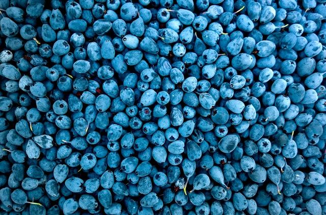
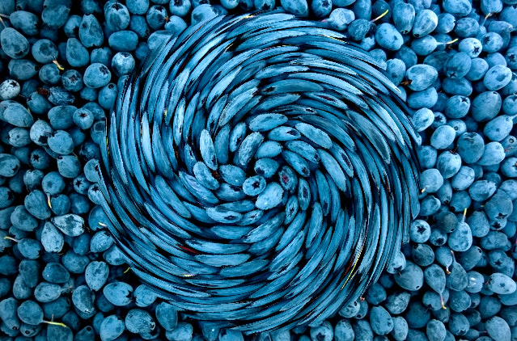

渦巻き
実行例
 
ソースコード
TypeScript
{kind=link}
解説/アルゴリズム
円形内の範囲を回転させるが、外側に行くほど回転が弱まるように設定する。
const radius = 200; // 半径
const maxRad = Math.PI; // 最大回転のラジアン値
半径 radius 内が画像処理の対象で、円の中心部分に近づくにつれて回転が強まり、円の外側に近づくにつれて回転が弱まる。
（円の中心～外側がmaxRad～0ラジアンの回転に対応する）
const dest = p.createImage(image.width, image.height);
dest.copy(
image,
0,
0,
image.width,
image.height,
0,
0,
image.width,
image.height
);
dest.loadPixels();
あるピクセルを別のピクセルにコピーするアルゴリズムなので、入力と出力画像は分けておく。
// 円の中心位置
const cx = image.width / 2;
const cy = image.height / 2;
for (let y = 0; y < image.height; y++) {
for (let x = 0; x < image.width; x++) {
// 円の中心から対象位置までの距離を求める
const dist = p.dist(cx, cy, x, y);
// 円の中心に近いほどthis.radの値に近づくようにする
// 円の範囲外は回転する必要が無いので0を入れる
const rad = Math.max(0, p.map(dist, 0, radius, maxRad, 0));
// radラジアンが0より大きければ回転する必要があるので回転行列を使用して回転後の位置を求める
if (rad > 0) {
const tx =
cx + Math.round(Math.cos(rad) * (x - cx) - Math.sin(rad) * (y - cy));
const ty =
cy + Math.round(Math.sin(rad) * (x - cx) + Math.cos(rad) * (y - cy));
const color = getPixel(image, tx, ty);
setPixel(dest, x, y, color);
}
}
}
ピクセルの抜け対策のため、回転後のピクセル (x, y) から回転前のピクセル (tx, ty) を回転行列で求める。